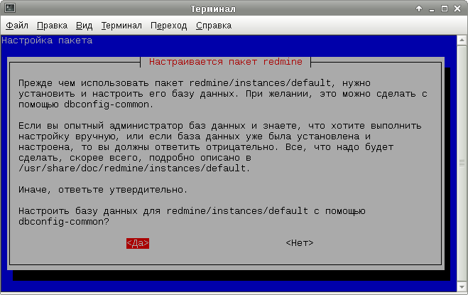
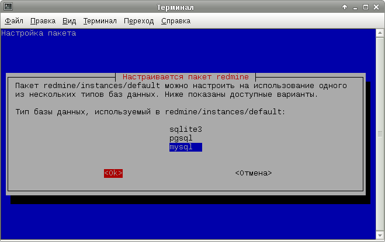
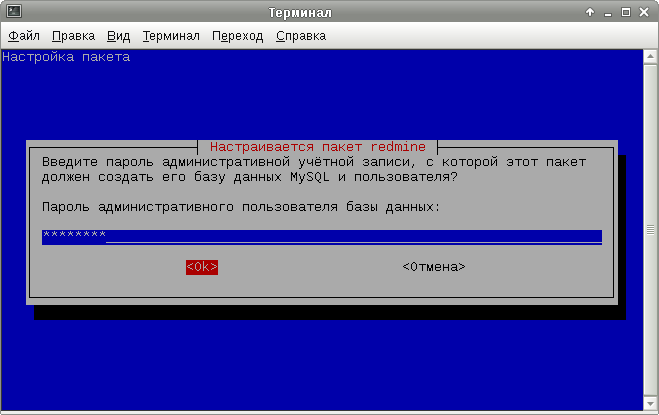
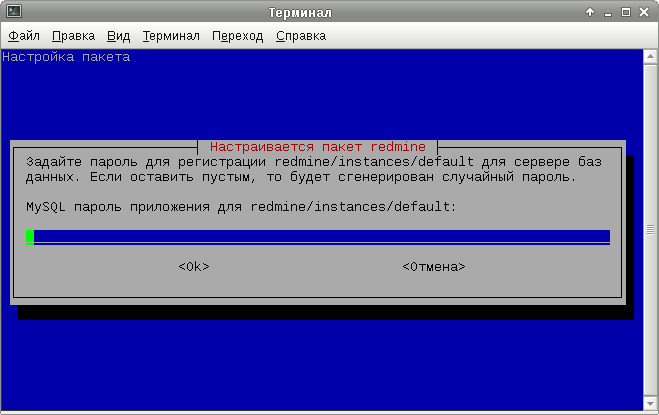
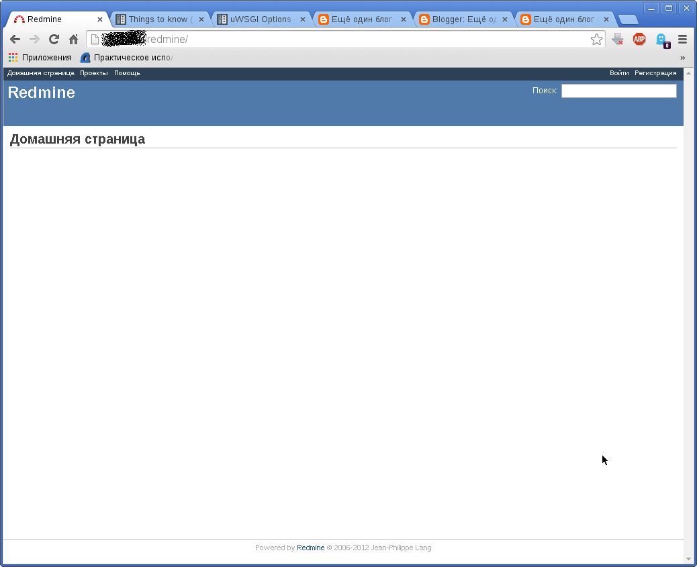

Эту заметку отчасти можно рассматривать как продолжение заметки Настройка nginx, php5-fpm и uwsgi. Здесь я покажу, как можно запустить Redmine под управлением uwsgi.
Redmine - это система управления проектами, планирования и учёта рабочего времени. Изначально создавалась программистами для программистов, однако на практике может быть полезна различному кругу пользователей. В ней можно вести заявки пользователей на реализацию какой-то новой функциональности, отмечать информацию об обнаруженных ошибках, отмечать процесс разработки и устранения ошибок, вести документацию и т.п.
Написана эта система на языке Ruby и с использованием очень известного за пределами Ruby-мира веб-фреймворка Rails. Запустить дистрибутивный Redmine мне удалось далеко не с первого раза: сначала появлялась какая-то ошибка обработки UTF-8, которую удалось решить переключением с Ruby1.9.1 на Ruby1.8, потом я долго не мог справиться с неполной передачей данных между веб-сервером и uwsgi, которая решилась указанием специальной опции буферизации uwsgi.
Для начала установим необходимые пакеты:
# apt-get install redmine redmine-mysql ruby1.8 uwsgi uwsgi-plugin-rack-ruby1.8 nginx-full
Как уже понятно из состава установленных пакетов, в качестве СУБД будем использовать MySQL. В процессе установки запустится мастер настройки базы данных. Ниже приведены снимки экрана с его диалоговыми окнами:
   Для запуска Redmine под управлением uwsgi создадим файл /etc/uwsgi/apps-available/redmine.ini со следующим содержимым:
[uwsgi] master = true procname = uwsgi-redmine procname-master = uwsgi-redmine-master plugin = uwsgi_rack_ruby18 rails = /usr/share/redmine/ env = RAILS_ENV=production env = RAILS_RELATIVE_URL_ROOT=/redmine processes = 4 post-buffering = 1
Описание опции post-buffering, с помощью которой удалось решить проблему с неполной передачей данных между веб-сервером и uwsgi, найденное на странице Things to know (best practices and “issues”) READ IT !!!:
If an HTTP request has a body (like a POST request generated by a form), you have to read (consume) it in your application. If you do not do this, the communication socket with your webserver may be clobbered. If you are lazy you can use the post-buffering option that will automatically read data for you. For Rack applications this is automatically enabled.
Несмотря на то, что тут написано что эта опция автоматически включается для Rack-приложений, на практике мне пришлось включить её вручную. Возможно автоматическое включение опции было добавлено в более поздних версиях uwsgi.
Переменная окружения RAILS_RELATIVE_URL_ROOT позволяет настроить Redmine для работы из подкаталога веб-сервера. Если вы запускаете Redmine на отдельном виртуальном или выделенном сервере, то эту строку указывать не нужно.
Осталось включить приложение:
# cd /etc/uwsgi/apps-enabled # ln -s /etc/uwsgi/apps-available/redmine.ini . # /etc/init.d/uwsgi start redmine
Для начала приведу пример файла конфигурации для настройки Redmine для работы из корня сайта:
server {
listen 80;
server_name redmine.domain.tld;
location / {
alias /usr/share/redmine/public/;
try_files $uri @redmine;
}
location @redmine {
uwsgi_pass unix:/var/run/uwsgi/app/redmine/socket;
include uwsgi_params;
uwsgi_modifier1 7;
}
}
Этот файл представляет собой настройки отдельного сайта, поэтому его нужно поместить в отдельный файл в каталоге для сайтов nginx. В данном случае это будет файл /etc/nginx/sites-available/redmine. Чтобы подключить его использование в nginx, нужно создать символическую ссылку:
# cd /etc/nginx/sites-enabled # ln -s /etc/nginx/sites-available/redmine .
Осталось перезагрузить или перезапустить nginx, чтобы настройки нового сайта вступили в силу:
# /etc/init.d/nginx restart
Можно настроить Redmine для работы из подкаталога /redmine. Для этого нужно вписать следующие настройки в файл конфигурации уже существующего сайта:
location /redmine/ {
alias /usr/share/redmine/public/;
try_files $uri @redmine;
}
location @redmine {
uwsgi_pass unix:/var/run/uwsgi/app/redmine/socket;
include uwsgi_params;
uwsgi_modifier1 7;
}
Осталось перезагрузить nginx, чтобы новые настройки вступили в силу:
# /etc/init.d/nginx reload
Теперь можно зайти в Redmine:
В системе уже создан пользователь с логином admin и таким же паролем. Не забудьте сразу же после входа поменять пароль!